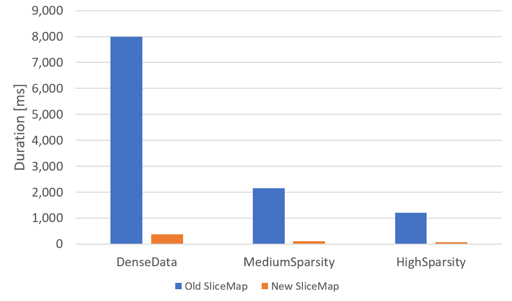

Welcome to part 2 of this series. In the previous post we setup our problem which is to speed up the SliceMap family of types for sparse data. We created benchmarks and measured the performance of the current implementation. I gave a brief overview of a new approach I had come up with and showed how it failed miserably.
We were in a depressing place at the end of the last post but hope burns eternal! I have already been researching approaches for this problem on and off for a year, so I didn’t expect the problem to be slain in a day. Rather than giving up, I went searching for answers.
Enter Data-Oriented Design
Recently I have been researching Data-Oriented Design. My first introduction to it was a great talk by Mike Acton as CppCon. I regularly watch talks on other languages and paradigms to grow my understanding of the field and this talk in particular struck a chord. While some may find Mike’s delivery a little brusque, I found it refreshing. The talk is littered with great lines, but the following is one of my favorite.
Reality is not a hack you’re forced to deal with to solve your abstract, theoretical problem. Reality is the actual problem.
Mike Acton
Overall, Data-Oriented Design emphasizes data and its transformation as the key thing to design around. It generally eschews Object Orientation as a means of decomposing problems and instead looks at what data layouts and access patterns allow us to extract the maximum performance. This talk sent me deep down a rabbit hole. Eventually I found my way to Jonathan Blow who has given many great talks online. I decided to pick up the book “Data-Oriented Design” by Richard Fabian.
I’m still struggling with how I could use Data-Oriented Design to solve my slicing problem when I came to chapter 6 which discusses Searching. On page 114 of the paperback Richard describes how we can have data structures for looking up data that keep track of the query patterns being used. Once a threshold is met, the data could be re-ordered to better suit how the data is being accessed.
This was the moment of insight for me. “Wait!” I said to myself. “In real world use cases, you are often slicing across 1 dimension of the data many times in a row. Then you may start slicing across another dimension many times in a tight loop. Why not have the SliceMap re-order it’s data to be optimal for the types of lookups that are being performed!”
Idea 3: Reorganizing Internals
I went back to the drawing board and reworked how data was being stored in the SliceMap types. The internal fields of the 1 dimensional SliceMap remained simple. We give the SliceMap a comparer for comparing the keys when performing the Hadamard Product. keys is just a chunk of memory that is sorted. values is contiguous memory where the position is what determines the key it goes with.
type SliceMap<'k, 'v when 'k : comparison>
(comparer: IComparer<'k>,
keys: ReadOnlyMemory<'k>,
values: ReadOnlyMemory<'v>) =
let comparer = comparer
let keys = keys
let values = values
SliceMap2D gets a little more interesting. We need to remember that a SliceMap2D can be thought of as a table in a database where the primary key is made up of two fields: Key1 and Key2. Here is what some example data could look like.
| Key1 | Key2 | Value |
|---|---|---|
| 1 | “A” | 2.0 |
| 1 | “B” | 8.0 |
| 1 | “C” | 3.0 |
| 2 | “B” | 1.7 |
| 2 | “C” | 1.7 |
| 3 | “A” | 9.4 |
| 3 | “B” | 4.6 |
| … | … |
Since we are trying to optimize the speed of slicing the data, we are willing to do some work up front to organize the data. When we initially create the SliceMap2D, we will sort the data by Key1 then Key2. This will allow us to use Run Length Encoding on the outer keys, Key1 in this case. We will store the length of the runs of the outer key in an IndexRange type.
[<Struct>]
type IndexRange = {
Start : int
Length : int
}
We will use two arrays for storing Key1 data. One array for the values of Key1, another for the IndexRange that corresponds to the key. We will call these fields OuterKeyValues and OuterKeyRanges respectively. Key2 and Values will be stored in a ReadOnlyMemory of their respective types. Key2 and Values have a 1 to 1 matching based on their location in their containers. We can now define SliceMap2DInternals for storing this information.
[<Struct>]
type SliceMap2DInternals<'k1, 'k2, 'v when 'k1 : comparison and 'k2 : comparison> = {
OuterComparer : IComparer<'k1>
InnerComparer : IComparer<'k2>
OuterKeyValues : 'k1[]
OuterKeyRanges : IndexRange[]
InnerKeyValues : ReadOnlyMemory<'k2>
Values : ReadOnlyMemory<'v>
}
Now, you may notice that I was talking about Key1 and Key2 but then switched to talking about OuterKey and InnerKey. This is where things may get confusing but trust me, we’ll get there! We need SliceMap2D to be able to restructure itself in order to provide fast slicing across Key1 or Key2. If Key1 data is stored in the OuterKey fields, then it is much faster to slice along Key1 because all we need to do it find the range of values it applies to and simply just slice the memory for InnerKeyValues and Values to create a SliceMap.
If Key2 is stored in the InnerKeyValues field, it is difficult to slice because a particular value of Key2 could occur in multiple places in InnerKeyValues. But what if we were able to flip which key was stored in the OuterKeyValues and OuterKeyRanges fields and which one was stored in InnerKeyValues? Well, then we could slice along the Key2 dimension quickly since all its values would be contiguous after flipping.
The “problem” is that F# is statically typed and doesn’t like you changing the type of fields. Fortunately, every problem in F# is solved with another type. Enter the SliceMap2DState.
type SliceMap2DState<'k1, 'k2, 'v when 'k1 : comparison and 'k2 : comparison> =
| Key1Key2 of SliceMap2DInternals<'k1, 'k2, 'v>
| Key2Key1 of SliceMap2DInternals<'k2, 'k1, 'v>
What this Discriminated Union is doing is containing the information for how the keys are stored in the SliceMap2DInternals. It tells us if Key1 is in the outer fields or if Key2 is. Now we can define SliceMap2D.
type SliceMap2D<'k1, 'k2, 'v when 'k1 : comparison and 'k2 : comparison>
(internalState: SliceMap2DState<_, _, _>) =
let mutable internalState = internalState
Notice, SliceMap2D is storing its state in a mutable field so it can change it when it wants. When you go to slice along a dimension, it will check how the data is laid out. If the data is not laid out for efficient slicing, it will swap the keys around. Here is what the slicing method looks like.
member _.Item
// Ignoring `f` at this time
with get (x: 'k1, f: Filter) =
// Get the internals
let internals =
// Check which state the internals are in
match internalState with
// This is the ideal state for serving up this slice so do nothing
| SliceMap2DState.Key1Key2 i -> i
// If the internals are in this state, we will swap the keys so
// that slicing can be fast
| SliceMap2DState.Key2Key1 i ->
let reOrdered = SliceMap2DInternals.swapKeys i
internalState <- SliceMap2DState.Key1Key2 reOrdered
reOrdered
let mutable intervalIdx = 0
let mutable keepSearching = true
// Perform a scan to find the matching key. We'll come back to this 😉
while keepSearching && intervalIdx < internals.OuterKeyValues.Length - 1 do
if internals.OuterComparer.Compare (internals.OuterKeyValues[intervalIdx], x) = 0 then
keepSearching <- false
else
intervalIdx <- intervalIdx + 1
if not keepSearching then
// The key was found, and we can slice the contiguous data
let interval = internals.OuterKeyRanges[intervalIdx]
// We have ensured that the pertinent data is contiguous so we can use
// slicing to get the necessary data
let newKeys = internals.InnerKeyValues.Slice (interval.Start, interval.Length)
let newValues = internals.Values.Slice (interval.Start, interval.Length)
// Return a SliceMap with the data slice
SliceMap (internals.InnerComparer, newKeys, newValues)
else
// The key was not found, return an empty SliceMap
SliceMap (internals.InnerComparer, ReadOnlyMemory Array.empty, ReadOnlyMemory Array.empty)
The reason this is a valid optimization is that SliceMap was never intended as a general-purpose data structure. It was built to make composing Mathematical Planning problems clean and simple. When creating constraints, the dominant usage pattern is to perform the same slice many times for different values. Honestly, I put too much functionality into the original SliceMap. I lost focus on what the real problem was. You can see our solution up to this point at this repo and branch.
Did We Get Faster?
In the previous post we ran our benchmarks against the current implementation, and we got the following timings.
| Method | Mean | Error | StdDev |
|---|---|---|---|
| DenseData | 7.993 s | 0.0748 s | 0.0700 s |
| MediumSparsity | 2.154 s | 0.0176 s | 0.0156 s |
| HighSparsity | 1.209 s | 0.0134 s | 0.0126 s |
These are the timings we get for our new version of SliceMap2D with self-adjusting internals.
| Method | Mean | Error | StdDev |
|---|---|---|---|
| DenseData | 379.05 ms | 5.281 ms | 4.940 ms |
| MediumSparsity | 113.99 ms | 0.647 ms | 0.574 ms |
| HighSparsity | 71.89 ms | 0.636 ms | 0.595 ms |
It looks a little better when we plot the performance against each other.

So, it got a little faster 😊. I almost cried when I saw this. The fact that this problem has been tormenting me for over a year problem had something to do with it. We have even more gains on the horizon! There are several other things we can do to speed this up. Feel free to check out this repo and branch to see what all of the code looks like and run the benchmarks for yourself! I welcome feedback and ideas!